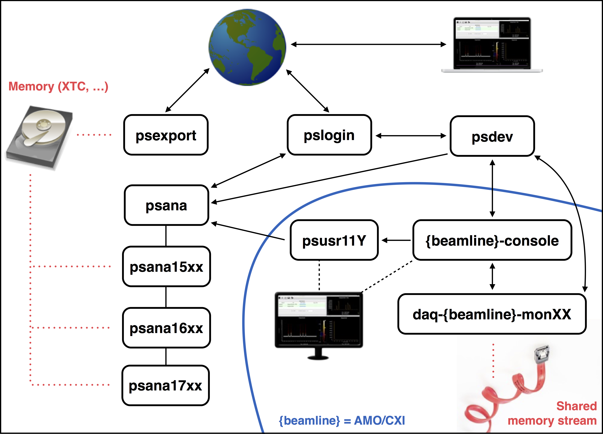

Hummingbird at LCLS
This is a step-by-step tutorial targeted to users of Hummingbird at the LCLS. The tutorial is maintained using this bitbucket repo: https://bitbucket.org/uu-lmb/lcls-tutorial, so if you have not already done so, make a local clone of the project:
git clone git@bitbucket.org:uu-lmb/lcls-tutorial.git /path/to/tutorial/and open this document in your browser:
cd /path/to/tutorial
open docs/build/index.htmlThis page is also available here: http://fxihub.github.io/hummingbird/lcls_tutorial
1. The Network at LCLS
First, you should make yourself familiar with the network at LCLS, it looks like this:

For running Hummingbird at LCLS, there are mainly two scenarios: the online and the offline case.
When running online, you should be logged into one of the operator machines (amoopr@amo-console or cxiopr@cxi-console) from where you are able to run the Hummingbird backend over SSH on one of the DAQ monitoring machines (daq-amo-monXX or daq-cxi-monXX) and the Hummingbird frontend directly from the operator machine (amo-console or cxi-console) such that the real-time figures can be displayed on one of the big screens.
When running offline, you are either logged into one of the psusr machines (psusr11Y) or connected from outside the LCLS to one of the psana nodes through pslogin. Here, the Hummingbird backend should run on a psana node, while the frontend can be run on psusr, psana (using X-forwarding) or locally (using an SSH tunnel).
2. Installation
There are two different repositories, one for Hummingbird itself (https://github.com/FXIhub/hummingbird), the other one for configuration and other beamtime specific files (https://bitbucket.org/uu-lmb/). We keep seperate configuration repos for each experiment.
Preparations for running online
Logged into one of the operator machines (amoopr@amo-console or cxiopr@cxi-console), there should be a beamtime folder, e.g. amo87215. Inside this folder, we clone Hummingbird into a folder we call hummingbird:
git clone https://github.com/FXIhub/hummingbird.gitWe also clone the Configuration/Beamtime repository inside configuration:
git clone git@bitbucket.org:uu-lmb/amo87215.gitIn case there is no existing Configuration/Beamtime repository, just clone one of the template repositories (TODO: add template repos) and create a new beamtime repository. As we are running Hummingbird outside of its source directory, we should add the hummingbird source directory to our path:
export PATH=$PATH:/path/to/hummingbirdPreparations for running offline
The easiest is to have the same repositories (as mentioned above) in your $HOME directory.
Dependencies
All necessary dependencies for Hummingbird should be already installed in /reg/g/uppsala/. Just run
source source_thisor
source source_this_on_rhel5on machines that are still running with RHEL 5. You should find these source files inside the Configuration/Beamtime repository.